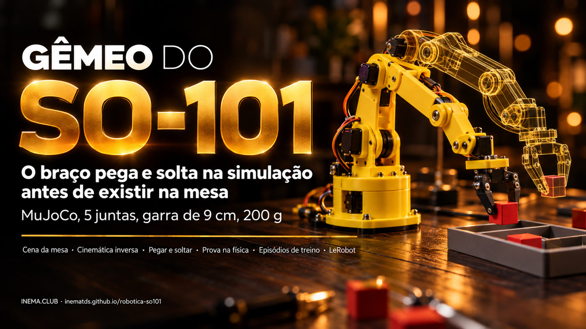
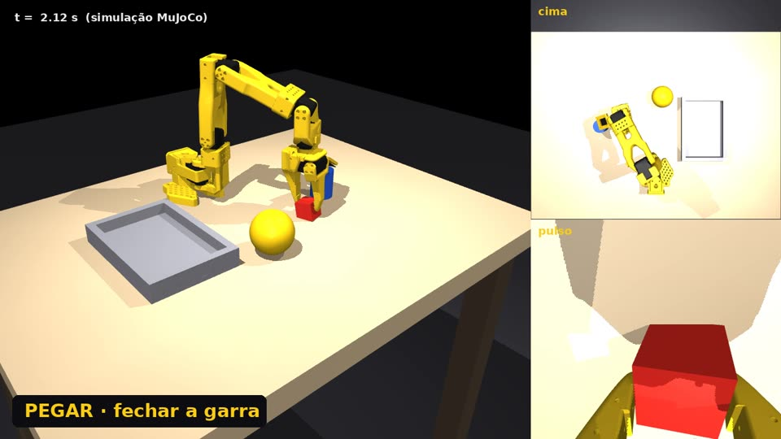
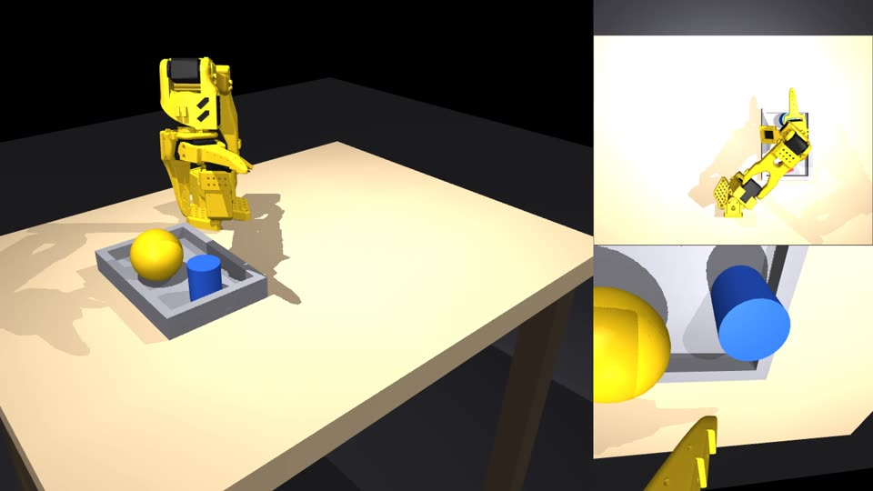

Gêmeo de simulação do SO-101: pega, leva e solta objetos leves na física, gera dados de treino e prova o plano antes de ligar um motor.

É uma cópia virtual (um "gêmeo") do braço robótico SO-101, o kit barato de 5 juntas usado com o LeRobot, rodando no simulador de física MuJoCo. Serve para quem vai montar o braço e quer testar antes: o gêmeo pega um cubo, uma bola de tênis e um potinho e põe numa bandeja, grava os movimentos como dados de treino e mostra se um plano funciona. Precisa só de um computador com Linux e Python; o braço de verdade entra nas fases seguintes.
Continua o robotica-real2sim, que fez o mesmo com um braço industrial Franka Panda. O SO-101 alcança metade e carrega 15 vezes menos, então quase tudo mudou: cinemática, garra, mesa e objetos.
Modelo oficial do SO-101 (MuJoCo Menagerie): 5 juntas no braço, garra com um dedo fixo e um que gira, servos com força máxima de 2,94 N·m.
Cubo de 3 cm, bola de tênis e potinho de 4 cm vão para a bandeja na física: 50 de 50 episódios para cada um.
Todo plano roda dezenas de vezes com variações de posição e de tamanho. Nada vai para o braço real sem passar na prova do pior caso.
A mesa vira um arquivo cena.json (escrito à mão ou tirado de uma foto por um modelo de visão). Daí em diante tudo roda local, sem API.
A posição da ponta manda; a garra fica reta para baixo quando dá e inclina sozinha quando o braço não alcança. O giro do pulso escolhe de que lado a garra fecha.
O objeto é pego encostado no dedo fixo; a bola é pega um pouco abaixo do centro, senão o dedo móvel empurra para baixo e ela escorrega.
O objeto carregado passa só 1,5 cm acima da borda da bandeja e contorna o que está na mesa: passar por cima de uma bola de tênis já fica fora do alcance.
Testado em Linux com Python 3.12. Não precisa de placa de vídeo dedicada: as imagens saem pelo EGL.
O instalador cria o ambiente virtual e baixa o modelo do SO-101.
git clone https://github.com/inematds/robotica-so101 cd robotica-so101 && ./instalar.sh
Só para o comando filmar.
sudo apt install ffmpegSó para exportar os episódios como dataset do LeRobot.
./instalar.sh --lerobotTodos os comandos abaixo rodam na pasta do projeto. Use sempre MUJOCO_GL=egl se não houver tela (o r2s.py já faz isso).
Os testes conferem a cena, o alcance da garra, os planos e os episódios.
./instalar.sh python3 testes/rodar.py # 14 casos -> TUDO OK
A cena de exemplo tem cubo, bola de tênis, potinho e bandeja, de 15 a 30 cm da base. Câmeras: geral, cima, frente e pulso.
./r2s.py ver exemplos/mesa-so101/cena.json mesa.png --camera geral
Um vídeo com a tarefa da cena (pegar o cubo e pôr na bandeja), com três câmeras lado a lado.
./r2s.py filmar exemplos/mesa-so101/cena.json so101.mp4 --cameras geral,cima,pulso
O plano é uma lista de passos pegar → destino. A prova roda N vezes, cada vez com a mesa um pouco diferente, e diz qual passo falha e por quê. Vagas na bandeja são calculadas pelo tamanho de cada objeto.
./r2s.py provar exemplos/mesa-so101/cena.json resultados/mesa-so101/plano.json -n 20 ./r2s.py provar exemplos/mesa-so101/cena.json resultados/mesa-so101/plano.json -n 20 --pior-caso
Cada episódio sorteia posição, giro e massa dos objetos, grava juntas e comandos a 50 Hz e uma anotação em 4 níveis (objetivo, subtarefa, primitiva, eventos). Com --imagens, grava também as câmeras cima e pulso.
./r2s.py episodios exemplos/mesa-so101/cena.json /tmp/ep -n 50 # 50/50 em ~9 s ./r2s.py exportar /tmp/ep /tmp/ds # dataset LeRobot (precisa do --lerobot)
Um modelo de visão pela assinatura (Codex ou Claude) lê a foto da mesa e devolve os objetos em centímetros; o script leva tudo para o alcance do SO-101 e avisa o que passa da garra (9 cm) ou da carga (200 g).
./r2s.py foto foto.jpg cena.json --motor codex
Números medidos na cena exemplos/mesa-so101, semente 0. O vídeo tem legendas em português.


| Teste | Resultado |
|---|---|
| Cubo de 3 cm até a bandeja | 50/50 episódios |
| Bola de tênis (6,7 cm, 58 g) | 50/50 episódios |
| Potinho de 4 cm | 50/50 episódios |
| Os três na mesma bandeja, medida certa | 18/20 |
| Os três, tamanho errado em ±15% | 18/20 |
| Os três, pior caso (bandeja 15% menor) | 6/20: os três quase não cabem |
| Cubo + potinho sem vagas × com vagas | 0/6 × 6/6 |
Para não prometer o que o projeto não faz.
O braço real ainda não foi ligado. O driver dos servos Hiwonder HX no LeRobot ainda não foi confirmado.
Deitar uma lata alta numa bandeja rasa existe no projeto do Panda, mas não foi portado para o SO-101.
No simulador o gerador sabe onde está cada objeto. No real, essa posição vai vir da câmera (Fase 4).
Cada fase tem um critério do tipo "comando → saída esperada" em docs/PLANO.md.